7 design styles
Pick a style, copy the prompt.
Every style from the reel with its real prompt. Attach one photo of yourself in ChatGPT, paste the prompt and send it.
01 / 07
Tilt Shift
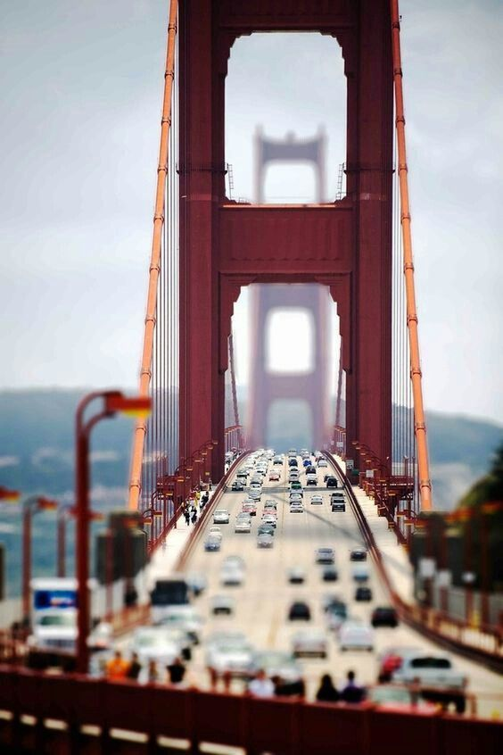
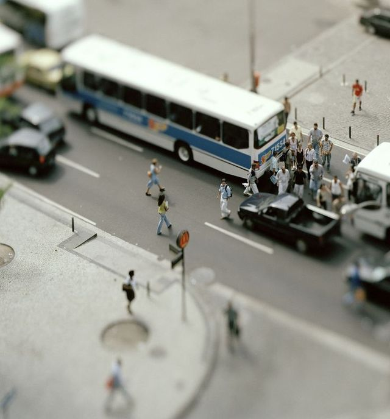
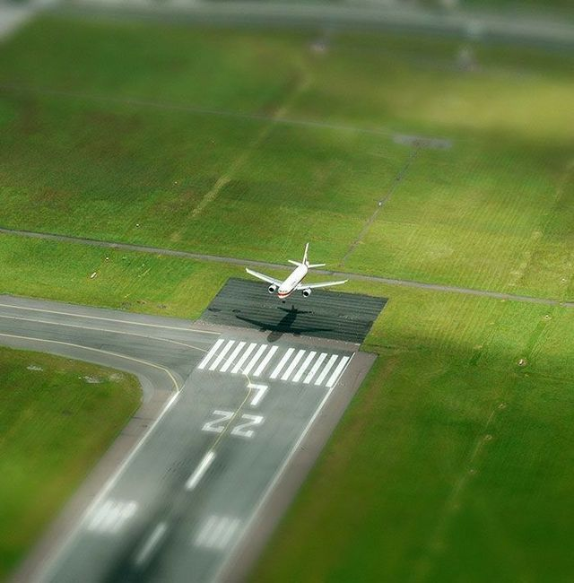
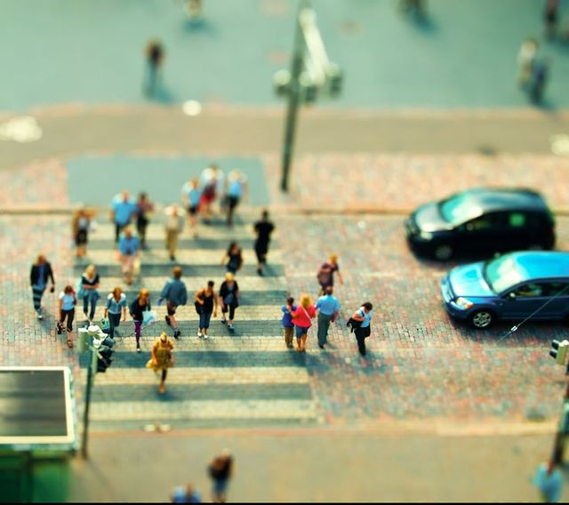
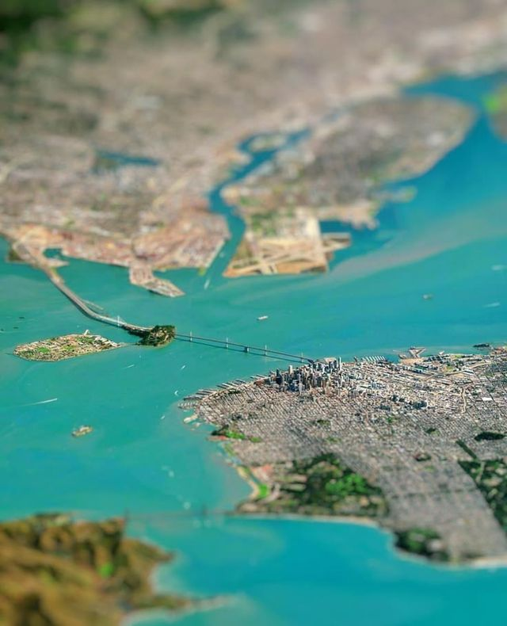
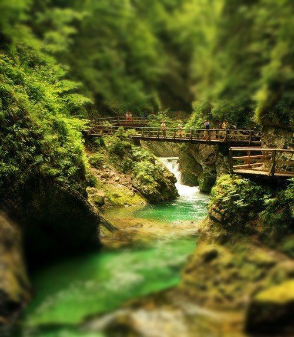
Use the attached photo as the subject. Keep the face, hair, body, pose and outfit exactly as they are, only the style changes. STYLE: a tilt shift miniature photo: a real scene shot from high above that looks like a tiny toy model town. SETTING: place the subject in a busy outdoor scene seen from a raised viewpoint: [a street crossing with painted zebra stripes, parked cars, a bus and small groups of pedestrians] (or a bridge full of traffic, a park path, a harbour with boats). The camera looks down at about 45 degrees, as if from a rooftop or a balcony. FOCUS AND LIGHT: one thin horizontal band of sharp focus across the subject. Everything above and below melts into a strong, smooth lens blur that gets heavier towards the top and bottom edges. Bright daylight, crisp short shadows, slightly overexposed. COLOUR: boosted saturation and contrast, candy bright colours: grass and trees in vivid green, water in turquoise, asphalt light grey, cars, umbrellas and clothes like glossy painted plastic. Everything looks clean and freshly painted. TEXTURE: smooth toy like surfaces, the people and cars around look like little plastic figurines on a model set. The subject keeps a fully recognisable face. COMPOSITION: subject inside the sharp band in the middle third, standing among the little people and cars, smaller than in a portrait but big enough to read the face, lots of blurred scenery above and below. AVOID: a normal eye level photo, blur on the subject, a dull grey grade, real landmarks, brand logos, any text. FORMAT: vertical 2:3, high resolution.
02 / 07
Fisheye
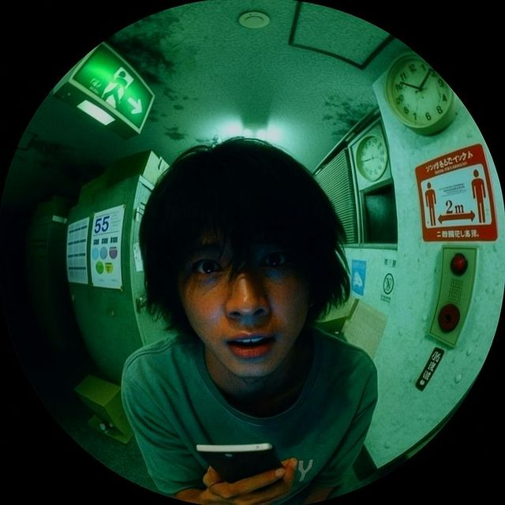

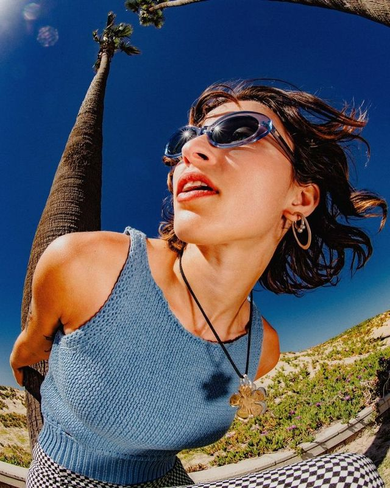
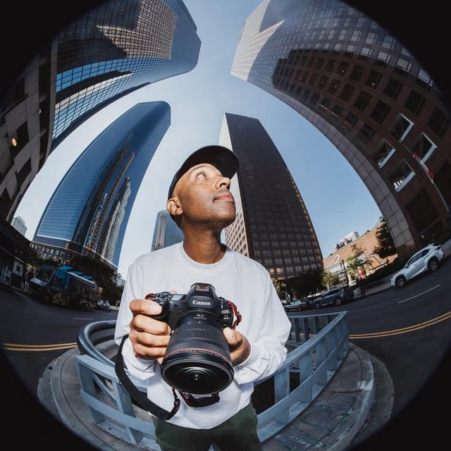


Use the attached photo as the subject. Keep the face, hair, body, pose and outfit exactly as they are, only the style changes. STYLE: an extreme fisheye lens photo, like a still from a street skate video shot with a 180 degree lens held at arm's length. LENS: a circular fisheye: the picture is a round image floating in a black frame, or it fills the vertical format with hard bent edges and black corners. Every straight line bends: buildings, walls, railings and lamp posts curve around the subject and lean in towards the centre like a dome. PERSPECTIVE: the camera very close to the subject, slightly below or slightly above. Whatever is nearest the lens looks huge (face, hands, a held object), the feet and the background shrink. The subject looks into or past the lens with attitude. COLOUR: bold and punchy, choose one: [deep blue sky and warm sunlit skin], [one saturated colour light like red or green flooding the whole room], or [high contrast black and white]. Strong saturation, deep blacks. TEXTURE AND LIGHT: on camera flash or hard sun, crisp detail in the centre that gets softer and slightly smeared towards the curved edges, light film grain, a thin colour fringe on the rim of the circle. SETTING: [a city street with tall towers curving overhead] (or a narrow tiled corridor, a sunny boardwalk with palm trees, a cobbled square). COMPOSITION: subject centred in the circle, head and shoulders big, the environment wrapping around in a bubble. AVOID: a mild wide angle, straight lines, deforming the face beyond recognition, brand logos, any text. FORMAT: vertical 2:3, high resolution.
03 / 07
Night Vision


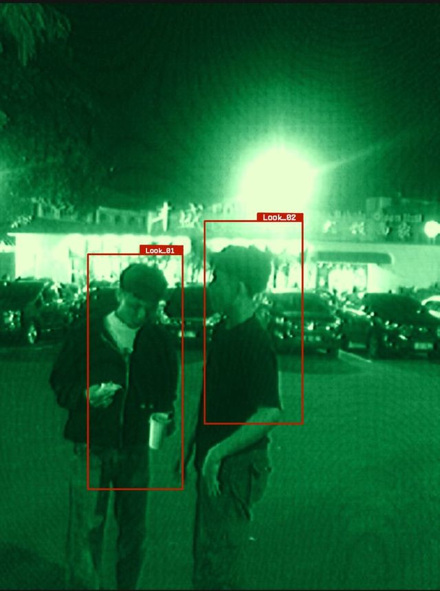


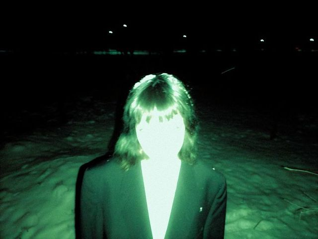
Use the attached photo as the subject. Keep the face, hair, body, pose and outfit exactly as they are, only the style changes. STYLE: a frame from a night vision camera, like footage seen through night vision goggles or a camcorder in infrared night mode. COLOUR: monochrome phosphor green only: deep black shadows, mid tones in dark olive green, highlights in pale glowing mint that almost turns white. No other colours anywhere. LIGHT: lit by a single infrared lamp next to the lens: the face and the front of the body glow bright, the background falls off fast into black. The eyes reflect the light and shine. Any lamp or street light in the scene becomes a big blooming white flare. TEXTURE: heavy video noise and grain everywhere, soft low resolution detail, slight smearing on movement, faint horizontal scanlines, a soft dark round vignette at the edges like looking through a goggle tube. INTERFACE: small thin monospace overlay in pale green: a dot and REC top left, a battery icon top right, a timestamp bottom left like 02:47:13, a small crosshair in the centre. Optionally a thin red rectangle tracking box around the subject with a tiny label TARGET 01. SETTING: outdoors at night: [a car park with parked vans] (or a dark field, a back street, a garden), everything beyond a few metres fading into black. COMPOSITION: candid and close, slightly tilted, like a flash selfie at night or a surveillance shot, subject filling the middle of the frame. AVOID: a daylight look, natural colours, a clean sharp image, brand logos, any text beyond the HUD. FORMAT: vertical 2:3, high resolution.
04 / 07
CCTV

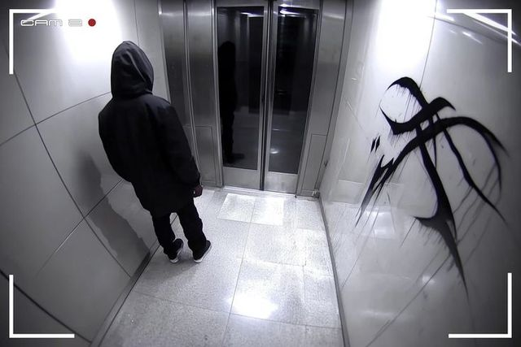


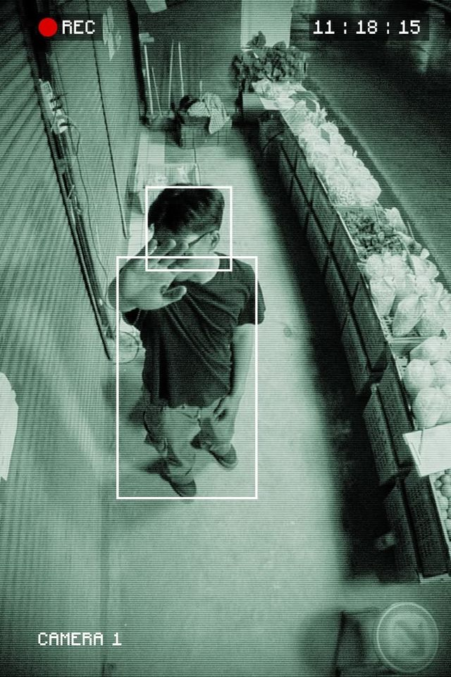
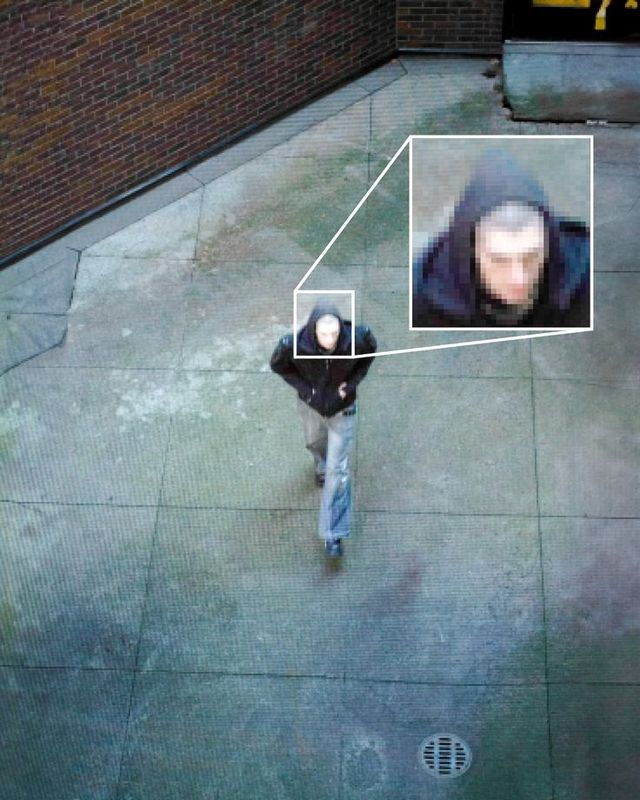
Use the attached photo as the subject. Keep the face, hair, body, pose and outfit exactly as they are, only the style changes. STYLE: a still frame from a security camera, the kind of grainy found footage clip that gets shared online. ANGLE: a camera mounted high in a corner near the ceiling, looking steeply down at the subject, wide lens with slight barrel distortion so walls, shelves and doors lean. SETTING: an everyday place: [a corner shop aisle with full shelves and drink fridges] (or a building entrance with glass doors, an empty street at night, a supermarket corridor). Products and signs blurred into anonymous colour blocks. COLOUR: washed out low quality video colours with a cold green or blue cast under fluorescent light, or black and white infrared at night. Flat contrast, blown out light sources. TEXTURE: low resolution, heavy compression blocks, smeared motion on hands and feet, noise in the shadows, slight interlacing lines. INTERFACE: white monospace overlay: top left the date and a running time like 23.02 FRI 22:05:43, top right CAM 03, bottom left a red dot and REC. A thin green rectangle detection box around the subject with a small label person 0.89. Optionally a zoomed inset box of the face in a corner, linked to the subject with thin lines. COMPOSITION: full body, subject in the lower middle of the frame with lots of floor around, caught mid action, either looking up at the camera or unaware of it. AVOID: cinematic lighting, sharp detail, an eye level angle, readable product names, brand logos. FORMAT: vertical 2:3, high resolution.
05 / 07
Light Leak
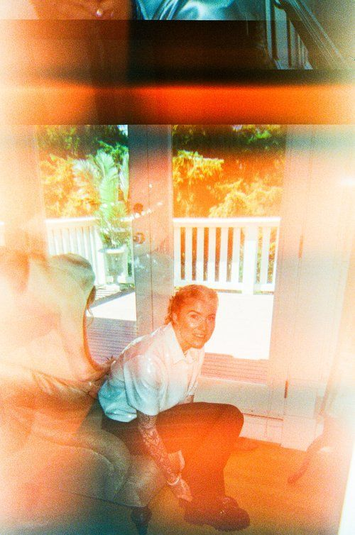
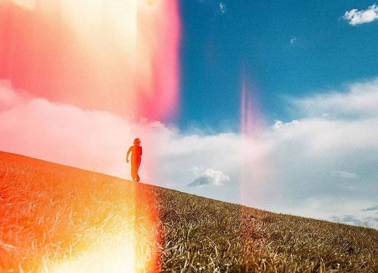
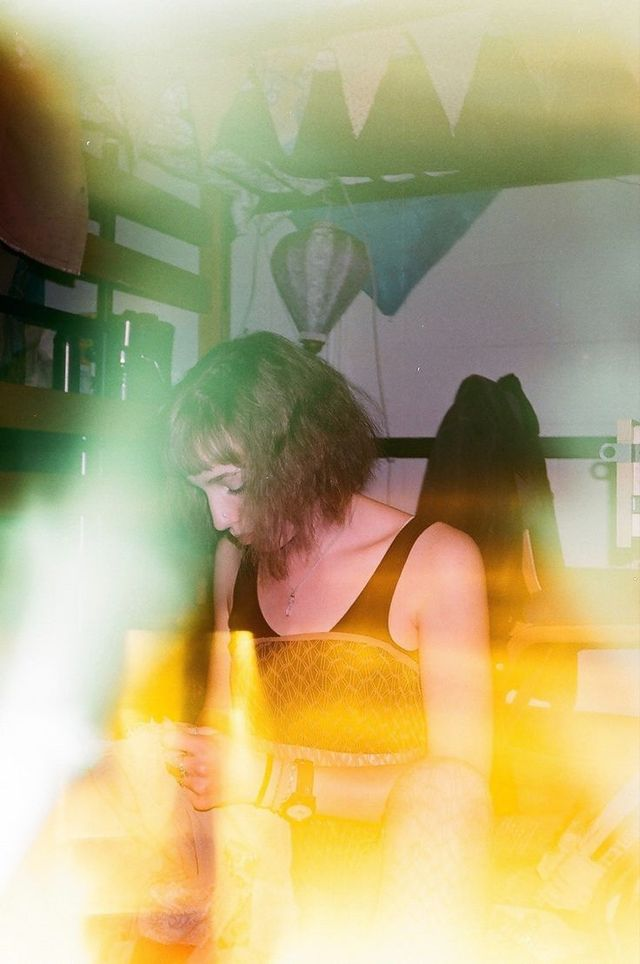
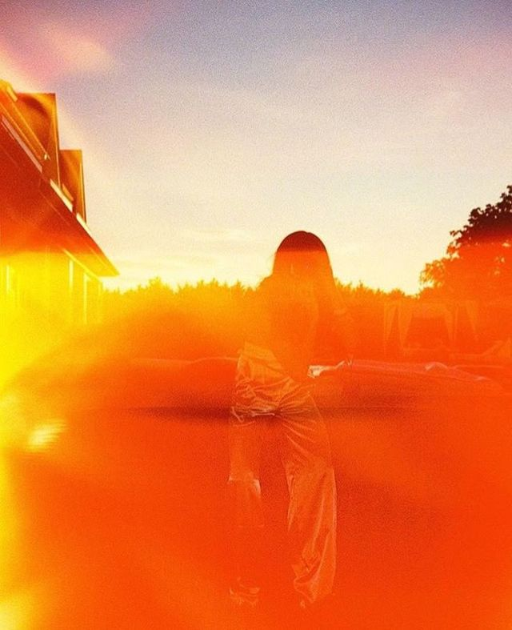
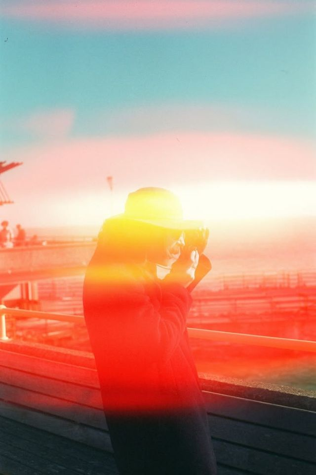
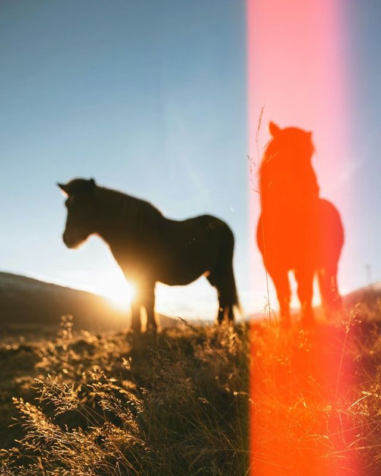
Use the attached photo as the subject. Keep the face, hair, body, pose and outfit exactly as they are, only the style changes. STYLE: an analog 35mm film photo with strong light leaks, like the first frames of a roll that got exposed to light by accident. LIGHT LEAKS: wide bands of warm light burning into the frame from one side or from the top: vertical stripes and soft blobs of red, hot orange and golden yellow, sometimes a pink or magenta band. Where the leak is strongest the image washes out almost to white, where it fades the scene shows through. COLOUR: warm faded film colours: creamy highlights, lifted blacks, sky in pale teal or cyan, skin glowing peach and orange. TEXTURE AND LIGHT: golden hour sun or a bright window behind the subject, soft backlight and rim light, visible film grain, red halation glowing around bright edges, slight softness, a hint of lens flare. SETTING: [a field of dry grass at sunset] (or a sunny living room by a window, a wooden pier by the sea, a hillside under a blue sky). COMPOSITION: casual snapshot framing, subject a bit off centre, partly lost in the light, the leak crossing the frame next to or over the body without hiding the face. AVOID: digital lens flare effects, a clean sharp digital look, cold colours, date stamps, brand logos, any text. FORMAT: vertical 2:3, high resolution.
06 / 07
Polaroid
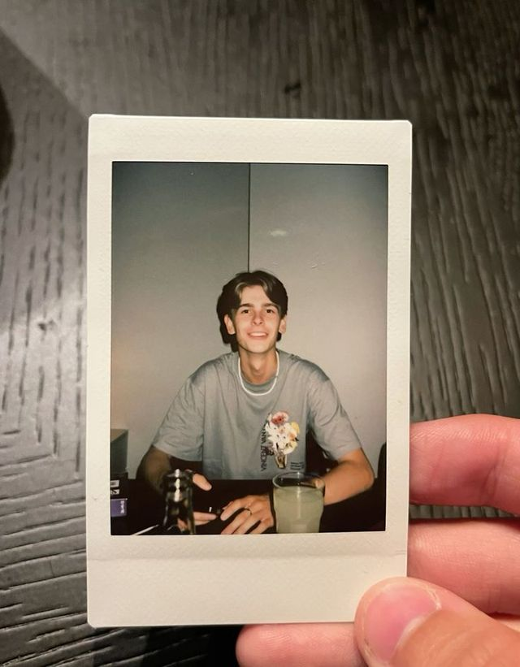
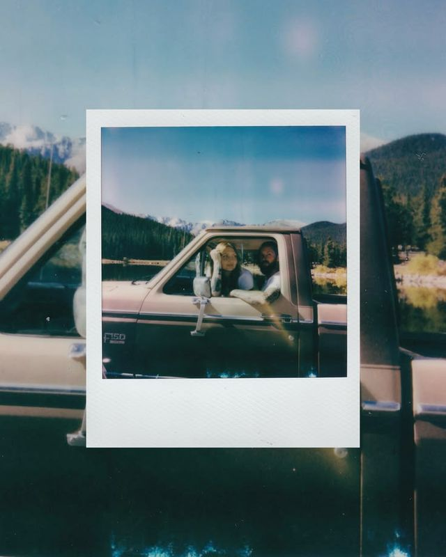
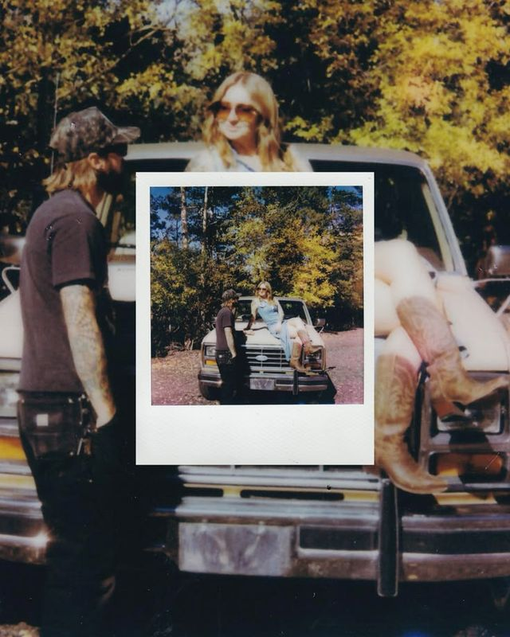
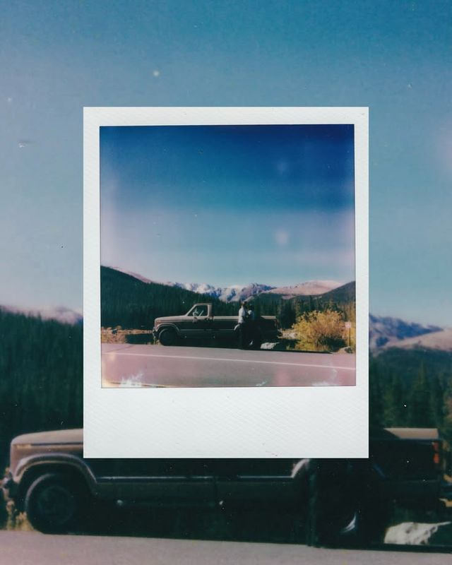
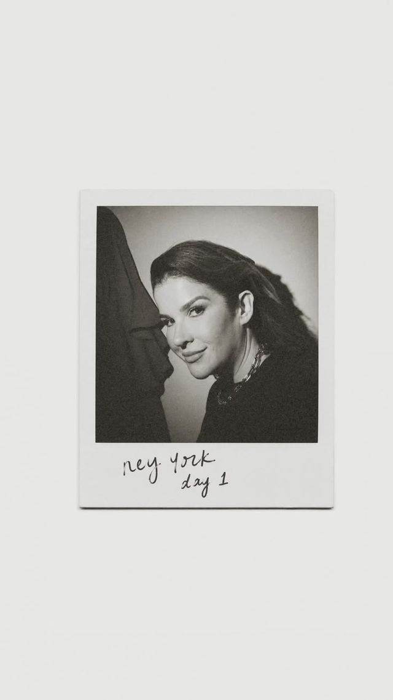
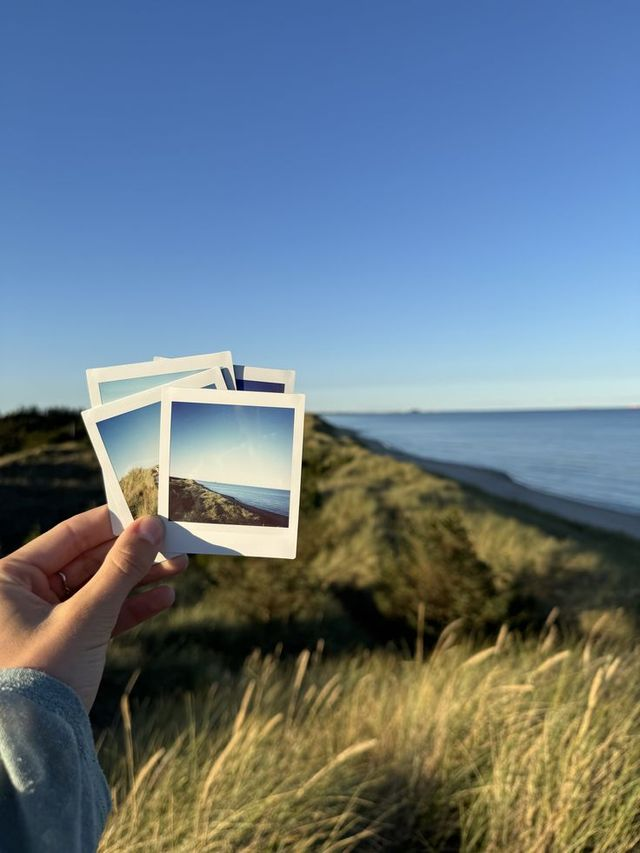
Use the attached photo as the subject. Keep the face, hair, body, pose and outfit exactly as they are, only the style changes. STYLE: a real instant film photo: the square print with its classic white frame and thicker bottom border, photographed as a physical object. PRINT: the subject inside the square image area. Soft, slightly faded instant film colours with a gentle cool blue or warm yellow cast, highlights a little blown, shadows lifted and murky, low sharpness, flash falloff, tiny chemical marks along the edges of the image. SCENE INSIDE THE PRINT: [outdoors on a sunny day next to an old pickup truck with pine trees and mountains behind] (or a dark room lit by on camera flash). PRESENTATION: choose one: [a hand holding the print between thumb and fingers over a dark wooden table], [the print held up in front of the real scene so the scene continues around it], [the print alone on a plain light grey background], [a loose pile of several overlapping prints of the same person in different poses]. TYPE: a short handwritten caption in black marker on the bottom border: [YOUR CAPTION], [day 1]. Nothing else written. TEXTURE: matte white frame with a faint texture, a soft shadow under the print, a touch of grain and dust. COMPOSITION: print centred and straight or slightly rotated, subject clearly visible inside the square, real surroundings around the frame. AVOID: a digital white border, rounded phone corners, perfectly sharp vivid colours, brand names or logos on the frame, printed text. FORMAT: vertical 2:3, high resolution.
07 / 07
Solarized


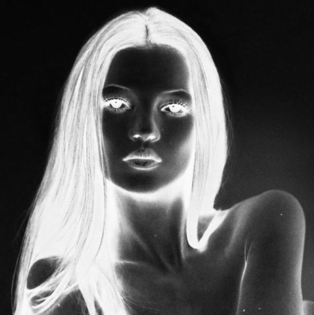
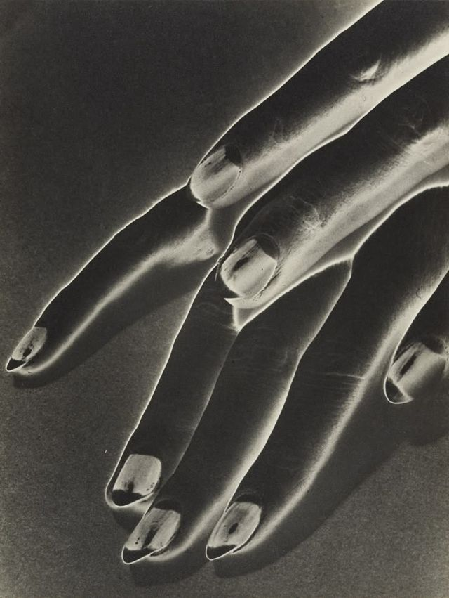

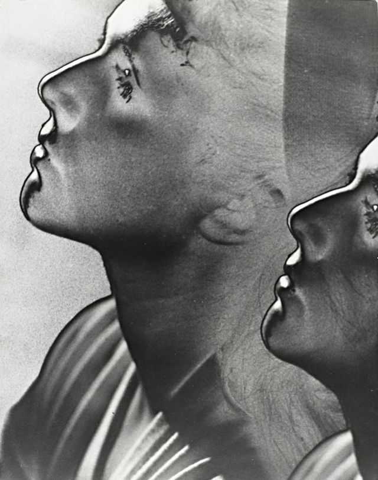
Use the attached photo as the subject. Keep the face, hair, body, pose and outfit exactly as they are, only the style changes. STYLE: a solarized black and white darkroom print, made by flashing light on the paper halfway through developing. TONES: partly reversed tones: some highlights turn dark grey and silver, some shadows turn light, so skin looks metallic and hair can glow white like a negative. Positive and negative mixed in the same image. EDGES: a thin bright or dark halo line around the silhouette and along strong edges like the profile, lips, eyelids, fingers and strands of hair. This line is the key of the effect. COLOUR: monochrome silver gelatin print: black, greys and white, with a faint cool blue or warm sepia tint. LIGHT: studio portrait lighting with strong side light so the profile, cheekbones, neck and shoulders become sculptural shapes. TEXTURE: fine film grain, smooth glossy paper, slight tonal unevenness from hand development, a small dust spot or two. COMPOSITION: close portrait, head and shoulders or a clean profile, plain studio background (it may flip to dark grey), elegant and surreal. AVOID: colour, a flat digital invert applied evenly, neon glow, brand logos, any text. FORMAT: vertical 2:3, high resolution.
Made one?
Tag @marcelgrauu
I share new styles and prompts almost every day. Follow so you don't miss the next ones.
Follow @marcelgrauu